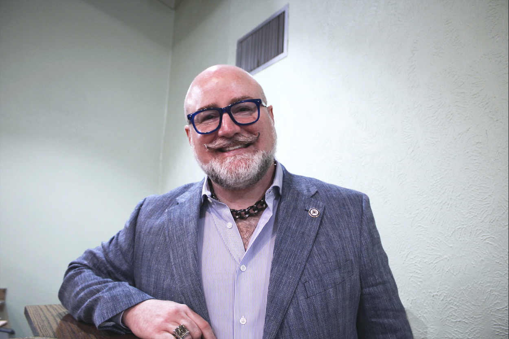
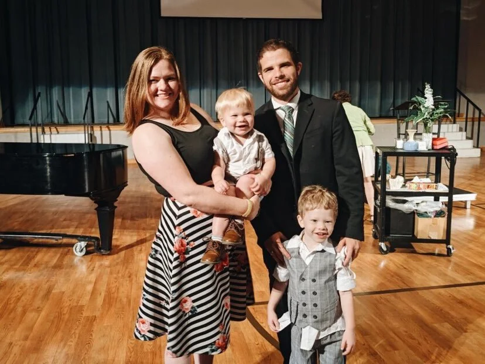

Our Leadership
Meet the team dedicated to building a beloved community of disciples
through authentic expression and radical grace.

Rev. Evve Kuykendall (he/him)
Pastor & Executive Director
Evve Kuykendall earned a Master of Divinity from Brite Divinity School, specializing in Christian Theology, Sexual and Gender Justice, and Christian History and Ethics.
With several years of ministry experience, Evve is deeply passionate about celebrating the image of God in every person and fostering connections that transcend differences in understanding or background, drawing all people toward God’s grace and love.
A self-proclaimed nerd, Evve delights in the worlds of comic books, superheroes, and electronic gaming—believing that stories of courage, justice, and imagination can inspire faith and community.
Whether debating the moral complexities of a favorite comic book character, exploring the symbolism in superhero origin stories, or joining friends for a cooperative gaming adventure, Evve finds joy in the creativity and camaraderie these worlds offer.
For Evve, these passions are not just hobbies, but opportunities to connect with others, spark meaningful conversations, and discover unexpected reflections of divine truth in popular culture.
Jesus Canales (he/him)
Director of Community OutreachJesus Adrian Canales is a junior at UT-Arlington pursuing a double major in Public Relations and Advertising, with a certificate in Nonprofits. Originally from Houston, Jesus serves at the UTA Wesley in leading events and advocacy efforts, curating spaces for underrepresented voices. After graduation, he hopes to continue nonprofit work, connecting deeper with local communities. In his free time, he loves crafting, drawing, and blogging.

Sarah Graves (she/her)
Administrative AssistantSarah serves as administrative assistant here at Wesley. She loves traveling [14 countries so far!] and sports such as rock climbing, wakeboarding, and snowboarding. She also loves to cook and bake. She’s a problem solver and wants to make the world a better place for future generations. The Wesley was where she found her faith, friends, and the love of her life!